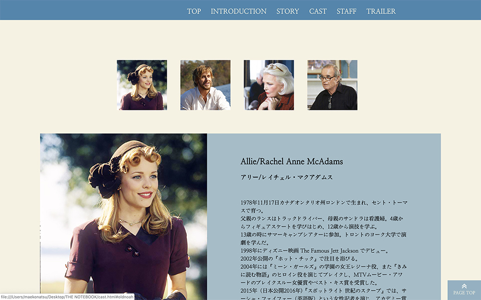
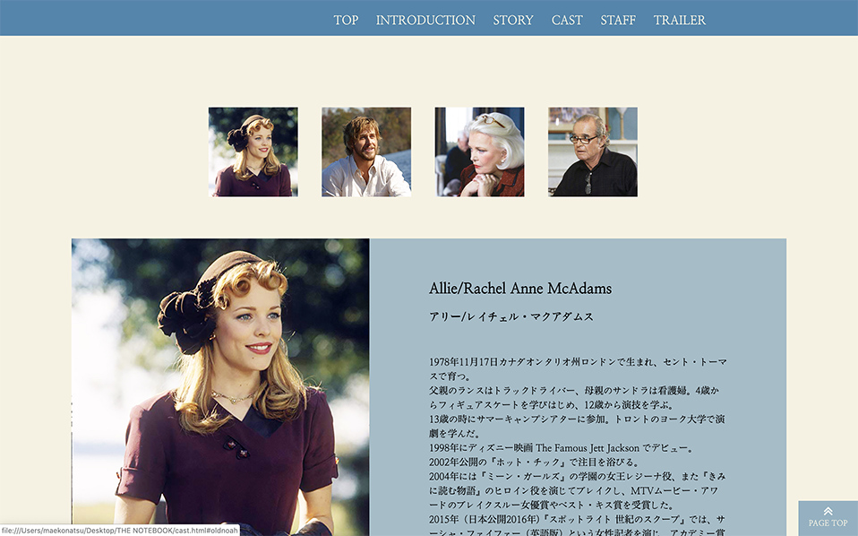

ABOUT
使いやすさを重視した上でフォントやカラーにこだわったシンプルで繊細なデザインを目標にデザインを行っております。コーディングに関しましてはレスポンシブデザイン、必要に応じてJavaScript,jqueryを導入しました。
SKILL
言語スキル
HTML,CSS,Javascript(Jquery)
WEBクリエイター能力認定試験（HTML5.0）スタンダード 修了
使えるソフト
Adobe:Photoshop
Adobe:Illustrator
Adobe:XD
Adobe:Dreamweaver
JetBrains:WebStorm
WORK WEB
職業訓練校でのWebサイト制作（デザインから製作まで）

 


フロントエンド開発を担当したページ（実務）
WORK DTP
職業訓練校でのグラフィック制作（パッケージデザイン）


紅茶のティーパックセットのパッケージデザインをしました。
箱の窓から中身が見えるようになっており、紅茶を飲むたびにデザインが変わるようになっております。
箱をシンプルで洗練されたデザインにすることによって、より一層中身のデザインが際立つようにしました。